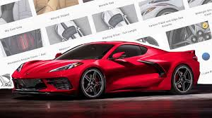

New Chevorlet Corvette C8
Recently Chevorlet announced a new Mid-Engine Chevy Corvette. And the body style is, Different to say the least.
Chevy finally gave in to making a mid-engine 'vette from the many years of chevy fanboys and fangirls asking for a mid-engine 'vette. Some of us are happy, and many are not....
Something very intresting is that Chevy decided to stick a trunk in the front and in the back, in other words means that Chevy is making a front trunk and a rear trunk even with the engine in the back to have a total amount of 13 cubic feet of space, 2 less than the previous C7 Corvette
The Chevorlet Corvette C8 is supposed to launch July 18th 2019

Elon Musk announced a new Tesla, named the Tesla Model Y, which completes the "S3XY" Tesla model lineup, the Tesla Model S, Model 3, Model X and newly announced Model Y.
The only difference between the Model X and the Model Y is the Model Y will have a higher body frame and has a optional third row seating.
Which will increase the seating from five in the Model X to seven with this option. The only downside is that because of the coupe look on the Model Y you would have to be me, meaning pretty short to fit in the third row
sadly i could not find a motor trend review on the Tesla Model Y, which sucks.
Click Here to see the s3xy tesla model lineup
Rumor has it that the new Rebel TRX would have a 707-hp hellcat powered engine inside this already beast of a truck. But Ram wont officially confim it sadly. Like who doesn't want 707 horses in your truck
The name TRX sounds a lot like T-Rex. Which is taking a shot at the lesser Ford Raptor for the fact that the TRX will be compete against the Raptor.
Apparently in the reviews page in motor trends website the TRX doesn't even exist....
Motor Trend Review Of The Chevorlet Corvette.